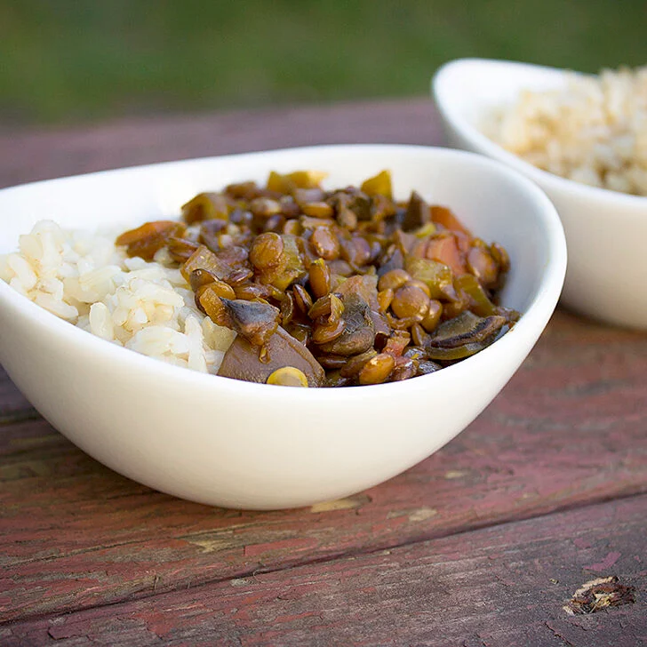

Ingredients
- 1 can of Amy's Lentil soup
- 2 cups rice of choice (recommend calrose white rice)
- 4 eggs
Steps
- In a small saucepan, pour Amy's Lentil soup and turn heat to low.
- Using a rice cooker, place 2 cups of rice and set to cook.
- Once rice finishes, heat up a skillet to medium heat and fry eggs (use avocado oil to make healthier).
- Plate the rice, then add lentil soup on top with fried eggs as the last layer.
- Serve and enjoy this simple yet delicious meal!